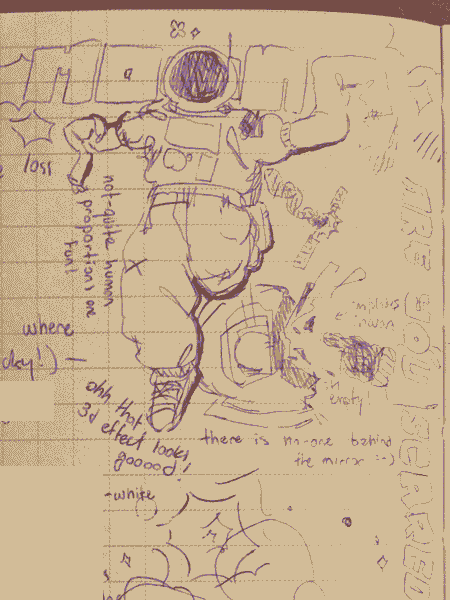
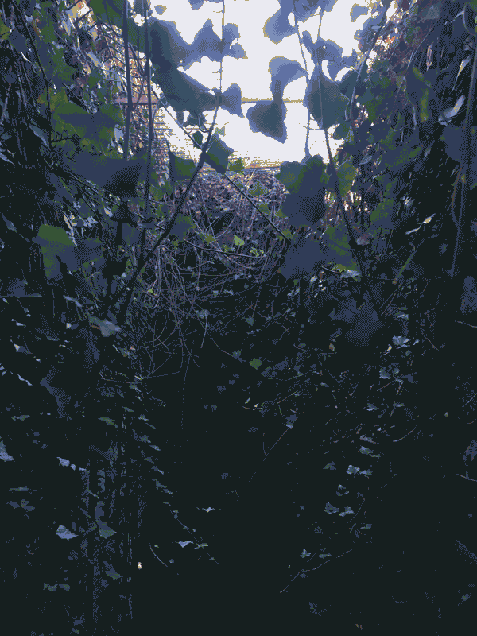
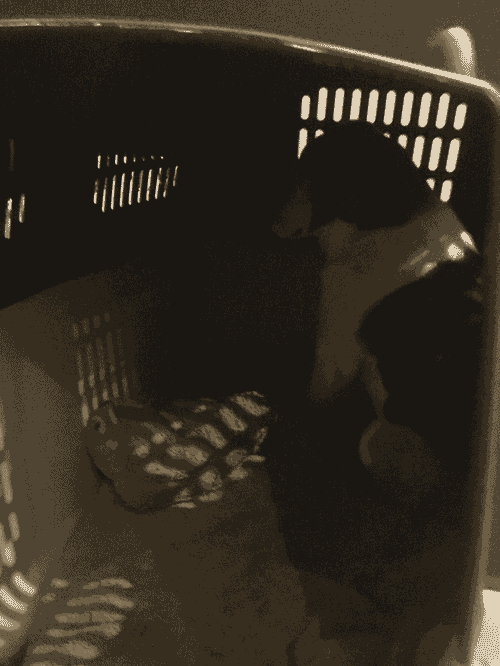

happy 2024! let's start the new year off with a bang!
i've remixed the index page, again—but no drastic site-wide changes this time! patch notes for index v5.1:
it's certainly the most "artful" of my designs. it's also just, like, a heck of a lot lighter! v5.0 had 7 different fonts that all had to load before the page did!! insane!! & most of them were used for like 1 button and that's it!!! sigh. overall, i think v5.0's two-banner + three-column layout was better at creating a sense of "open space" and having lots to explore, while v5.1 feels much more calm and self-contained and, yeah, artful, i guess. both versions have their pros and cons... but the change is a nice way to kick off 2024.
let's talk a little about what the new year means for webcatz! obviously, none of the promises i make in the next few paragraphs will *necessarily* come true, but i'd like to lay out some basic goals when it comes to my creative projects. i'm carrying two big ones into 2024—cat comic and bad dream.

progress has been proceeding very well on cat comic!! however, it's a very ambitious project—i've been aware of that since day one—and even if i had the story completely finished tomorrow i still wouldn't yet start publishing it. i'd like to get some practice in before i start the figurative marathon—over the first half of 2024, i want to finish at least one short comic to help me figure out workflow and style stuff! that'll probably be published on the site and mirrored (heh) on itch.
bad dream is an only slightly less tricky project. i'm starting to think of it as a bit of a "testing ground" for the more surreal imagery late cat comic will demand of me. i'd like to get a demo out on itch by the end of summer—this would entail three or so different arenas, a few interesting enemies, and a basic player toolkit (all friend-playtested). i can then use that, along with any feedback i might get, as a base to build the rest of the game on! it'll probably be a 2025-26 release, if it ever gets finished.
that's the big projects covered! other than that, i also want to do some more game jams—the ones i did over the summer had some of the lowest effort-to-return ratios of literally anything i did that year. i want to participate in a larger game jam (not just me and mart. mart can join if they want though i love you mart) and i want to do some non-game related jams too. we'll see if i can squeeze them in between everything else!



2024 is gonna be a really interesting year for me. gonna be leaving my country for university & hopefully starting to chip away at transitioning... i feel like i'm finally starting to get on my feet, as like, a person.
dear readers, thank you for visiting this little site. i hope the new year brings you all nothing but love and kindness and all the good things u deserve. love u all dearly. peace